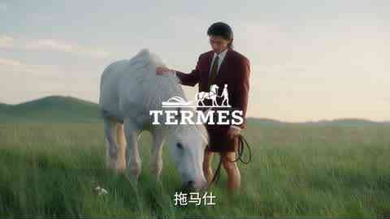
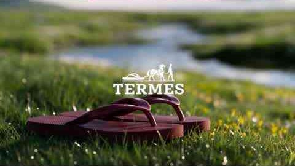
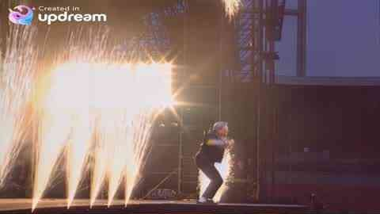
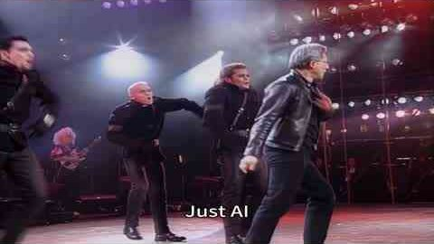

Assignment 2 · 15% of the course grade
Reverse, Rebuild, Remix
AI Video Reverse Engineering
Choose a short AI-generated video. Work out the prompt and reference image that most likely produced it. Use them to reconstruct the video as closely as you can. Then edit your recipe to make your own version.
Due
Choose a video Reverse engineer Reconstruct Edit Your version
Example videos ↓ · Make it about HKUST · How to reverse engineer a video ↓ · Workflow figure · Tools and resources
Three parts
Reverse engineer the prompt and reference image
Choose one AI-generated video, 5–15 seconds long (one shot is enough). Study it frame by frame. Write the prompt you think produced it: subject, action, setting, camera movement, lighting, style, and sound. Recover or recreate its reference image, usually the first frame. Also say whether you think it was made with text-to-video, image-to-video, reference-to-video, or video-to-video (for example a face swap over real footage), and why.
Reconstruct the video
Generate the video from your prompt and reference image. Compare it with the original, adjust one thing at a time, and try again. Make at least three attempts. Your goal is to match the original as closely as possible in composition, motion, camera, style, and timing.
Edit and make your own version
Keep what works in the recipe and change it to say something of your own. Change at least two of these: subject, setting, style, action, camera, story, or sound. Your version should be 10–30 seconds with audio. You may extend it with extra shots. We especially encourage a version about HKUST that people would want to share: see ideas below.
Keep a log as you work: For every reconstruction attempt, save the prompt, reference image, tool or model, settings, and a still frame. This log is the core of your report.
Choosing a source video: Pick a fun AI video you enjoyed, such as a viral clip, a creative ad, or a model’s official showcase. See the example videos below, or the Lecture 07 demo links. Always credit the original creator. You may analyse parody clips of public figures, but in your own version, do not use a real person’s face or voice without consent, and do not make content that could mislead viewers.
Submit three files
- 1. Side-by-side comparison (MP4)
Original on the left, your best reconstruction on the right, playing in sync. - 2. Your own version (MP4)
10–30 seconds, with audio. - 3. Process report (PDF, 6–10 slides)
Include all the items below in this one report.
- Source: The original video, a link, its creator, and the model if known.
- Reverse-engineered recipe: Your final prompt, the reference image, and your guess at the generation mode. For each part of the prompt, point to the evidence in the video.
- Reconstruction log: At least three attempts, each with a still frame, what you changed, and what improved or got worse.
- Gap analysis: What you could match, what you could not, and why. For example: a different model, missing settings, randomness, or editing after generation.
- Your version: What you changed from the recipe and the idea or mood you wanted.
- Reflection (200–300 words): What did reverse engineering teach you about how these videos are made and directed?
- Credits: The source video and creator, what AI generated, what you edited yourself, and where any other assets came from.
| What we look for | Weight |
|---|---|
| Reverse engineering: A detailed prompt and reference image, supported by evidence from the video. | 25% |
| Reconstruction: A close match, with clear and purposeful iteration. | 25% |
| Your version: A clear idea, meaningful changes, and a finished piece with sound that an audience would want to share. | 25% |
| Analysis and reflection: An honest gap analysis and thoughtful learning. | 15% |
| Documentation: Complete report, log, and credits. | 10% |
Example videos · fun places to start
Two viral AI videos that are great for this assignment. Each one teaches something different about how AI videos are made. You may choose one of them (pick a 5–15-second section), or find your own. The stills and workflows below are our best guess, which is exactly what you will practise.
Example 1 · Cheap flip-flops, luxury ad
Watch on Bilibili ↗ · Rednote repost ↗ · 王左导演, “如何把人字拖拍成买不起的样子”, 2:03, labelled as containing AI-generated content
A pair of cheap Guangdong flip-flops gets the full luxury-fashion-film treatment for a made-up brand, “TERMES”. The joke is the contrast (反差), and the voiceover is itself a mock recipe for a luxury ad: a model who never hurries, a white horse from nowhere, waves, wind in the coat. In other words, the creator has already written half of your prompt. The same director made more in the series, such as an electric tricycle ↗ and a plastic stool ↗.


- 01 · SCRIPTWrite the joke voiceoverThe narration is a mock checklist for shooting a luxury ad, so it doubles as the shot list (about 20 shots).
- 02 · ASSETSCharacter + product referencesOne character sheet (red suit, long hair) and one reference of the red flip-flops, reused in every shot.
- 03 · KEYFRAMESOne image per shotText-to-image with a shared style phrase, e.g. “luxury fashion film, hazy golden hour, 35 mm, shallow depth of field, muted greens”.
- 04 · ANIMATEImage-to-video, one move per shotAbout 5 seconds each: a slow dolly, wind in the coat, the horse turning its head, slow motion on the macro.
- 05 · FINISHVoice, music, logo, captionsVoiceover (recorded or TTS), soft music, the fake logo and subtitles added in the editor, cut to the narration.
For your version: keep the luxury-ad recipe and swap in an everyday object from your own city or culture, such as a red-white-blue bag, a takeaway milk tea, or an Octopus card.
Example 2 · Jensen Huang World Tour
Watch on Bilibili ↗ · 王与也行, “黄仁勋 世界巡演”, 1:26, Oct 2026, 5 million+ views · News (HK01, 中文) ↗
Michael Jackson’s 1992 Bucharest concert performance of “Jam”, recreated with Nvidia’s CEO on stage, new lyrics about GPUs and computing power, and tech CEOs in the crowd. It went viral on X, and Elon Musk reposted it joking that this is why RAM is so expensive. Other creators quickly made their own “World Tour” versions with game characters and other stars, which is exactly what Part 3 asks you to do.
Not a simple face swap. Making-of tutorials show that each concert shot was reverse engineered and regenerated with consistent character references. The Updream tool used even has a “shot reverse-engineering” (分镜逆向) skill. See the Updream tutorial ↗ and a community breakdown ↗ (both in Chinese).


- 01 · REFERENCEBreak the real concert into shotsShot list with timing, framing, camera move and action for every cut. This is the same task as Part 1 of this assignment.
- 02 · CHARACTERSConsistent character sheetsMulti-view references for the performer and each crowd cameo, so faces and outfits stay the same.
- 03 · KEYFRAMESMatch each original compositionGenerate a first frame per shot that copies the original framing, with the new characters in it.
- 04 · ANIMATEVideo per shot, then patchGenerate each shot from its keyframe and character references (the tutorials use Seedance 2.5), then fix bad parts locally.
- 05 · SOUND + EDITNew lyrics, AI vocal, cut to the beatRewrite the lyrics, generate a song in the original style, edit shots to the music and add subtitles.
For your version: keep the “famous performance, new performer” idea, but use an original character, yourself, or a consenting friend instead of a real public figure, and give it your own story.
Make it about HKUST · and make it shareable
The two examples went viral because they took a recipe everyone recognises and pointed it at something close to home: Guangdong flip-flops, a famous tech CEO. Do the same with HKUST. Take the recipe you reverse engineered and aim it at campus life that every student, alumnus, and future applicant will recognise.
What makes a short video shareablePatterns from the two examples
- Hook in the first two seconds: start on the most surprising image, not on a title card.
- One clear contrast: cheap vs. luxury, ordinary vs. epic, CEO vs. pop star. Keep to one joke and push it.
- Local, but readable by outsiders: a campus in-joke with visuals anyone can understand; add Chinese and English captions.
- Made for phones: vertical 9:16 for Rednote, Douyin, Instagram Reels, or YouTube Shorts; 15–30 seconds; it should work with the sound off.
- A punchline ending and a title that makes people want to send it to a friend.
Posting it (optional)Sharing is encouraged but never required
- You are welcome to post your version on Rednote, Bilibili, Douyin, Instagram, or YouTube with #AMCC5160 and #HKUST. We will show some favourites in class.
- Views do not affect your grade. We grade the idea, the craft, and your process, not the algorithm.
- Label it as AI-generated, and credit the creator of the video you reverse engineered.
- Do not make it look like an official HKUST announcement or advertisement, do not invent fake news (for example, a fake class cancellation), and do not show classmates or staff without their consent.
How to reverse engineer a video
Think like a detective. Every element of the video is a clue about the prompt, the reference image, and the settings that produced it.
1. Collect the evidenceWatch slowly and save the important frames
- Watch the video several times: once for the story, once for the camera, once for the sound.
- Save the first frame, the last frame, and one or two key middle frames. A screenshot at full size is fine, or use the frame-extraction command in the resources below.
- Note the duration, aspect ratio, and any visible cuts. Many AI clips are a single 5–10-second shot.
2. Write the promptDescribe what you see, layer by layer
- Subject: Who or what, with key details of appearance and clothing.
- Action: What happens, in order, and how fast.
- Setting: Location, time of day, weather.
- Camera: Shot size, angle, and movement, such as a slow push-in, orbit, handheld, or tracking shot.
- Look: Lighting, colour palette, lens, film or animation style.
- Sound: Music, effects, ambience, or dialogue.
You may ask a multimodal AI assistant to describe your frames and draft a prompt. Treat its draft as a starting point: check every word against the video, and say in your report what you changed.
3. Recover the reference imageMost image-to-video clips start from their first frame
- Try the extracted first frame directly as your reference image.
- If it is blurry or partly hidden, regenerate it with an image model, or clean it up with image editing or upscaling.
- If you think the video was text-to-video, write an image prompt that recreates the first frame and include it in your report.
4. Guess the generation modeLook for clues about how it was made
- Image-to-video: The first frame is very detailed and stable, and motion grows from it.
- First and last frame: The clip lands exactly on a carefully composed ending.
- Reference-to-video: The same character or product stays consistent across varied shots.
- Text-to-video: The composition is more generic, and details shift during the clip.
- Video-to-video: The motion, crowd, and camera are too precise and natural to be generated, while only the face, voice, or style has changed. Look for a real source video underneath.
5. Iterate the reconstructionChange one thing at a time
- Generate your first attempt and place it next to the original.
- Find the biggest difference: composition, motion, camera, style, or timing.
- Change only the prompt part or setting that controls that difference, and generate again. Record the result in your log.
You may not be able to use the same model as the original. That is fine: a careful explanation of the gap is part of the grade.
See how the pieces fit together
What made the original work: the camera move, the pacing, the lighting idea.
Subject, setting, style, story, or sound, to express your own intention.
Tools and resources · use what you need
Any image and video tools from Assignment 1 work here. Use the same platform for all your reconstruction attempts so that your comparisons are fair.
- Assignment 1: workflow tools and websites →RunningHub, LiblibAI, Jimeng, TapNow, Freepik Spaces, LTX Studio, ComfyUI, Weave, Hailuo, Vidu, and more.
- Lecture 07: demo videos →Recent AI video examples you can choose as a source.
- ComfyUI: image-to-video with Wan 2.2 ↗A free, open image-to-video route where you can fix the seed and see every setting.
- Seedance in ComfyUI: reference workflows ↗First/last-frame and reference-to-video examples, useful for testing your mode guess.
- FFmpeg: extract frames and build a side-by-side video ↗Optional. Commands are below; any video editor can do the same.
Optional FFmpeg commandsFor students comfortable with the command line
- Save the first frame:
ffmpeg -i original.mp4 -frames:v 1 first.png - Save one frame per second:
ffmpeg -i original.mp4 -vf fps=1 frame_%02d.png - Side-by-side video:
ffmpeg -i original.mp4 -i mine.mp4 -filter_complex "[0:v]scale=-2:720[a];[1:v]scale=-2:720[b];[a][b]hstack" -an side_by_side.mp4
In a video editor, place the two clips on separate tracks and crop or scale each to half the frame.
Connect to the lecturesIdeas from earlier weeks that help here
- Lecture 02: Generative editing and keeping images consistent through video.
- Lecture 03: How seeds and guidance change a result, and why the same prompt can give different videos.
- Lecture 05: Style, authorship, and credit. Whose work are you rebuilding, and what makes your version yours?
- Lecture 07: Recent models, real-time generation, and motion.
Keep it simple. Use any accessible tools. Coding and paid subscriptions are not required. A perfect match is not expected; we value careful observation, honest analysis, and a thoughtful version of your own.
Tip · Make a vlog with AI
Raw clips in.
A finished vlog out.
This one-minute promo was edited entirely by an AI agent (Claude). I gave it four raw phone clips—about 12 minutes of an unscripted dinner conversation plus some car karaoke—and one sentence: make a commercial promo for the Ivanka show, use highlights of my talk and some singing.
What the AI did on its own
- Skimmed the footage and transcribed the Mandarin speech
- Picked the strongest lines and cut on word boundaries
- Reframed to 9:16, added title cards and Chinese/English subtitles
- Cleaned and balanced the audio, then re-checked its own cut
How I directed it
make it 30 seconds
remove my name and affiliation
use some other clips of my talk too
·maybe one minute
No timeline, no editing software—just notes, like working with an editor.
Try it: upload your raw clips to an AI agent that can run code (such as Claude), describe the audience, length, and tone in one sentence, then give notes until it feels right. Handy for this assignment and your final presentation—just say in your write-up how AI was used and which creative choices were yours.
Download the video MP4 ↓Questions & comments
Ask anything.
Help each other.
Questions about Assignment 2? Ask here—or share a comment, a link, or your work in progress. Classmates can reply, and I will answer questions here too.